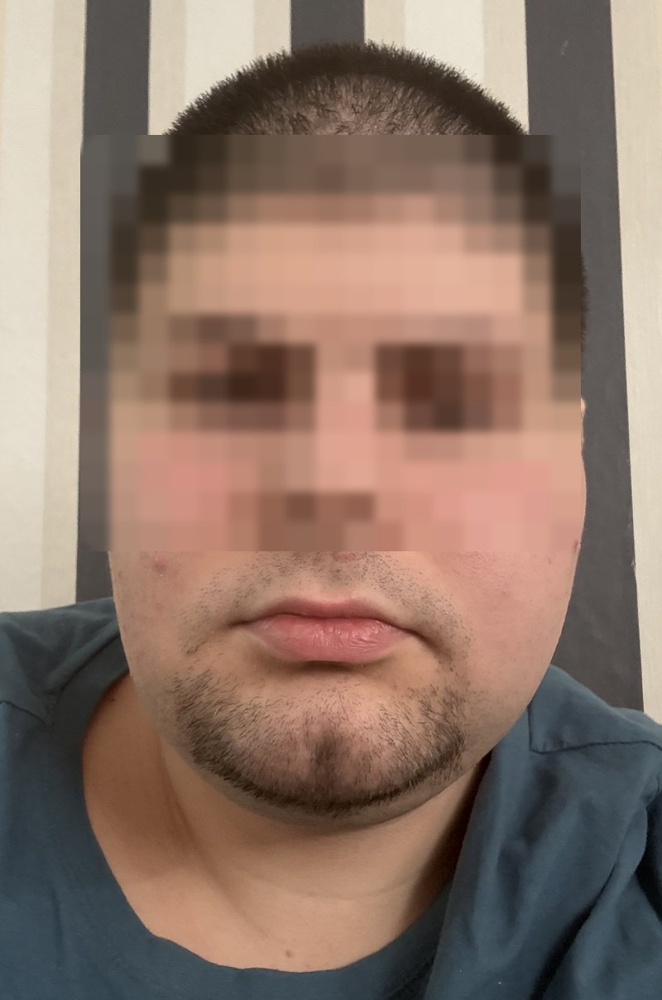

Jeder Bart ist eine Technik, kein Zufall.
Bart_stil zeigt dir alle gängigen Bartformen als Illustration – mit Wuchsdauer, Trimmer-Einstellungen in Millimetern und einem Schritt-für-Schritt-Tutorial für jeden einzelnen Stil. Dazu ein 1:1-Tutorial an einem echten Gesicht.
Von diesem Gesicht zu deinem Bart
Als Beispiel dient ein echtes Foto mit einem kurzen, gewachsenen Stoppelbart – dem Punkt, an dem fast jeder Bart beginnt. Das Gesicht ist zum Schutz der Privatsphäre unkenntlich gemacht; der Bartbereich bleibt scharf, denn genau darum geht es. Klicke einen Schritt an, um die passende Hilfslinie im Foto einzublenden.

Beispielfoto · Gesichtspartie bewusst verpixelt · Hilfslinien sind schematisch
Alle Bartstile
Filtere nach Kategorie, Schwierigkeit oder Gesichtsform. Ein Klick auf eine Karte öffnet das vollständige Tutorial mit Werkzeugliste, Millimeter-Angaben und typischen Fehlern.
Welcher Bart passt zu dir?
Ein Bart verändert die wahrgenommene Gesichtsform. Die Regel dahinter ist simpel: Was zu rund wirkt, wird gestreckt – was zu lang wirkt, wird verbreitert. Wähle deine Form.
Wähle oben eine Gesichtsform
Nicht sicher? Miss im Spiegel: Stirnbreite, Wangenknochenbreite, Kieferbreite und Gesichtslänge. Der größte dieser Werte bestimmt die Form.
Was du wirklich brauchst
Fünf Dinge decken 95 % aller Stile ab. Alles andere ist Komfort.
Barttrimmer mit Aufsätzen
Das wichtigste Werkzeug. Achte auf feine Abstufungen (0,5-mm-Schritte) und einen Aufsatz, der über 12 mm hinausgeht, wenn du längere Bärte planst.
Präzisionstrimmer
Schmaler Klingenkopf für Kanten, Wangen- und Halslinie. Damit entstehen die geraden Linien, die einen Bart „geschnitten“ statt „gewachsen“ aussehen lassen.
Bartschere
Ab etwa 2 cm Länge unverzichtbar. Der Trimmer schneidet alles gleich lang, die Schere formt – vor allem Kinnspitzen und Rundungen.
Kamm & Bürste
Feiner Kamm für Schnurrbart, grober für den Bart, Wildschweinborsten für die tägliche Formgebung und die Verteilung des Hauttalgs.
Öl, Balsam, Wachs
Öl pflegt die Haut darunter, Balsam gibt Längen Kontrolle, Wachs hält Schnurrbartformen. In dieser Reihenfolge kaufen.
Zwei Spiegel
Klingt banal, ist aber der Unterschied zwischen symmetrisch und schief: Ohne Seitenansicht kontrollierst du Halslinie und Koteletten nur nach Gefühl.
Der Pflegeplan
Ein Bart scheitert selten am Schnitt, sondern an der Pflege dazwischen.
Bürsten oder kämmen in Wuchsrichtung. 2–5 Tropfen Bartöl in die Haut einmassieren – dort entsteht der Juckreiz, nicht im Haar. Bei gestylten Schnurrbärten: Wachs erneuern.
Hals- und Wangenlinie nachrasieren. Diese beiden Kanten machen den Unterschied zwischen gepflegt und vergessen.
Mit Bartshampoo waschen, danach Balsam. Normales Haarshampoo entfettet zu stark und macht das Barthaar stumpf.
Länge korrigieren: Spitzen kürzen, Ausreißer entfernen, Symmetrie prüfen. Immer an trockenem Bart.
Form komplett überarbeiten – Wangenlinie neu setzen, Übergänge nachziehen, ggf. beim Barbier gegenprüfen lassen.
Bart nass schneiden, gegen den Strich am Hals rasieren oder „nur schnell die eine Seite ausgleichen“. Alle drei enden regelmäßig in einer Neurasur.
Kurz beantwortet
Wie lange dauert es, bis ein Vollbart wächst?
Barthaar wächst etwa 1–1,5 cm pro Monat. Für einen dichten Vollbart rechnest du mit 6–8 Wochen, für einen Garibaldi mit 4–6 Monaten, für einen Bandholz mit rund einem Jahr. Die „Awkward Phase“ in Woche 2–3 sieht bei jedem lückig aus – sie ist kein Zeichen für schlechten Wuchs.
Wo genau gehört die Halslinie hin?
Zwei Finger über den Adamsapfel legen – dort beginnt der Bart. Die Linie läuft in einem flachen U zu beiden Ohrläppchen. Der häufigste Fehler ist, entlang des Kieferknochens zu rasieren: Das lässt Kinn und Kiefer optisch verschwinden.
Und die Wangenlinie?
Eine gedachte, leicht gebogene Linie vom Ohrläppchen zum Mundwinkel. Bei lückigem Wangenwuchs setzt du sie tiefer an, das lässt den Bart dichter wirken. Zu hoch angesetzt kostet dich zwei Wochen Nachwuchs.
Mein Bart wächst fleckig – welcher Stil funktioniert?
Alles, was nicht auf die Wangen angewiesen ist: Kinnbart, Kreisbart, Van Dyke, Balbo, Hollywoodian oder ein Schnurrbart. Ein Millimeter mehr Länge kaschiert Lücken zusätzlich, weil die Haare sich gegenseitig stützen.
Warum juckt der Bart?
Fast immer die Haut, nicht das Haar: Der Bart entzieht der Haut Talg, sie trocknet aus. Bartöl direkt in die Haut einmassieren, nicht nur über die Längen. In den ersten zwei Wochen zusätzlich kratzen frisch geschnittene, spitze Haarenden – das gibt sich.
Trocken oder nass schneiden?
Immer trocken. Nasses Barthaar ist bis zu 30 % länger als trockenes – wer nass schneidet, nimmt regelmäßig zu viel ab.
Was tun, wenn eine Seite kürzer geraten ist?
Nichts. Der Reflex, die andere Seite „anzugleichen“, endet fast immer bei einem deutlich kürzeren Bart. Eine Woche wachsen lassen und dann nur die längere Seite minimal anpassen.